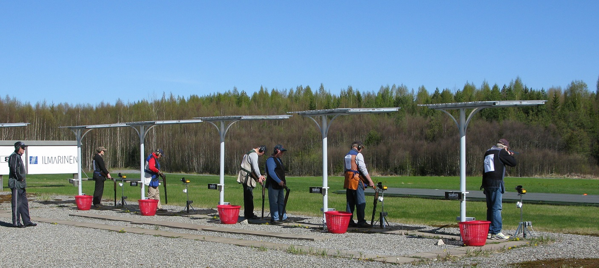
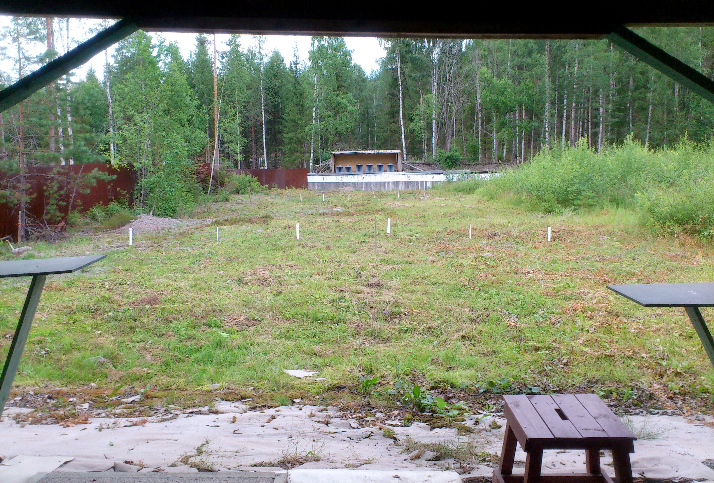

Kuusi monipuolista ampumarataa Pirkanmaalla

Yksi Suomen suurimmista haulikkoampumakeskuksista. Kansainvälisen tason radat Lempäälässä, osoitteessa Pirkkalantie 1296.

Monipuolinen ulkoampumarata Tampereella. Pistooli-, kivääri- ja metsästysammuntaa useilla eri etäisyyksillä.
Tampereen Tammelan kaupunginosassa sijaitseva ilma-aserata monipuolisella varustelulla.
Sisäradat ja varuskunnan radat Tampereen seudulla
Tampereen keskustassa sijaitseva talvikauden ilma-aserata. Ilmakivääriammuntaa liikkuviin maaleihin.
Väestönsuojaan rakennettu sisäampumarata. Vain .22-kaliiperi. 50 m pienoiskiväärirata, 25 m pistoolirata ja 9 mm pistoolirata.
Pirkkalan varuskunnan kivääri- ja pistooliradat. TASERA-kulkulupa vaaditaan. Yhteyshenkilö: Kimmo Pyhältö.
Liity jäseneksi ja pääset harjoittelemaan kaikilla seuran ampumaradoilla. Voit myös ottaa yhteyttä ja kysyä lisätietoja.